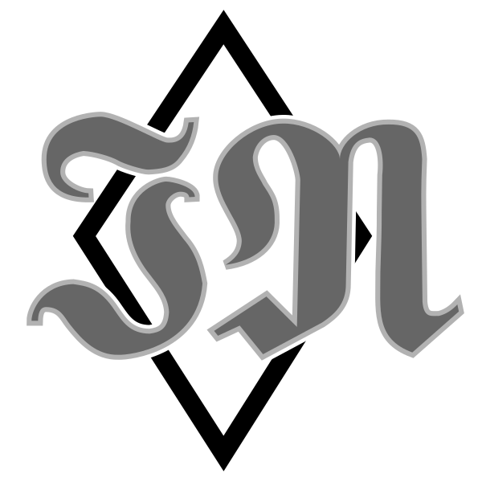

WEBSITE
for Jacob Neumann
Home
About
Research
Teaching
Resources
CV
Etc.
Welcome!
Thanks for visiting my personal webpage.
My name is Jacob Neumann, I'm a graduate student studying (and teaching) logic, philosophy, type theory, and category theory.
Use the links above to learn more about my work!
Recent News
Oct. 27: I delivered a talk, A Type Theory for Synthetic 1-Category Theory , for the 2024 Category Theory Octoberfest. Oct. 25: I posted a preprint, Synthetic 1-Categories in Directed Type Theory , to the arXivJul. 23: I released my most recent 'Intro to HoTT' video on YouTube, Mechanics, or Magic?, Part 0: STLC and Propositional Logic Jun. 11: I delivered a talk, Updates on Paranatural Category Theory, at the TYPES 2024 Conference . The abstract is available here and my slides are available here .Apr. 11: I delivered a participant talk, A Crash Course on Yoneda Reasoning , at the 2024 Midlands Graduate School . My slides are available here .Apr. 04: I delivered a talk, Towards Modal SOGATs , at the 2024 Meeting of EuroProofNet Working Group 6 . The preprint it's based on is available here and a recording of the talk can be found here .Apr. 03: I delivered a talk, A Sampling of Synthetic 1-Category Theory , at the 2024 HoTT/UF Workshop . My slides are available here , the preprint it's based on is available here , and a recording of the talk can be found here .